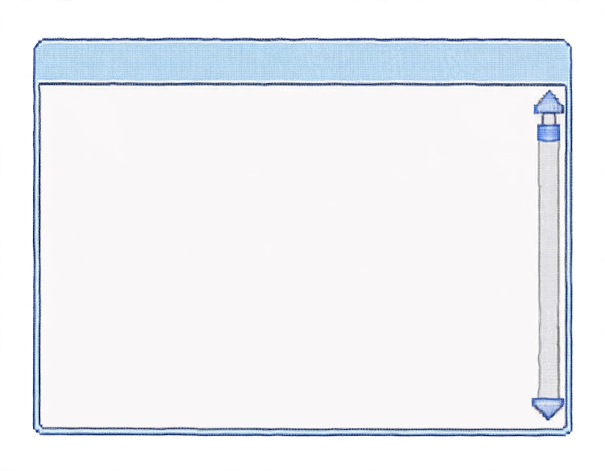

<!doctype html>
<!-- Throwaway map-only prototype: one oversized, scrollable artwork window for visual iteration. -->
<meta charset="utf-8">
<meta name="viewport" content="width=device-width,initial-scale=1">
<title>Atlas artwork popup v2 prototype</title>
<style>
  * { box-sizing: border-box; }
  html, body { margin: 0; min-height: 100%; background: #fff; color: #292735; font: 16px Arial, sans-serif; overflow: hidden; }
  .map { position: relative; height: 100vh; background: #71d6e9 url("assets/terrain.png") center / cover no-repeat; }
  .note { position: absolute; top: 18px; left: 18px; z-index: 2; padding: 10px 14px; background: #ffdce9; border: 2px solid #fff; box-shadow: 2px 2px 0 #567; font-weight: 700; }
  .marker { position: absolute; z-index: 3; width: 32px; height: 26px; border: 0; color: #fff; font: bold 16px monospace; cursor: pointer; box-shadow: 2px 2px 0 #fff; }
  .marker.eight { left: 31.2%; top: 34%; background: #608ab5; }
  .marker.fourteen { left: 53.2%; top: 21%; background: #ae5e8d; }
  .window { position: fixed; z-index: 10; top: 26px; right: 26px; width: min(1180px, 78vw); height: min(920px, 88vh); min-width: 620px; min-height: 520px; display: none; cursor: default; }
  .window.open { display: block; }
  .frame { position: absolute; inset: 0; width: 100%; height: 100%; pointer-events: none; }
  .drag { position: absolute; left: 7%; right: 7%; top: 8%; height: 10%; cursor: grab; }
  .drag:active { cursor: grabbing; }
  .scroll { position: absolute; left: 7%; right: 11%; top: 18%; bottom: 9%; overflow-y: auto; padding: 0 12px 24px 0; scrollbar-color: #5e87cc #eff2f4; scrollbar-width: thin; }
  .art { width: 100%; display: block; background: #fff; image-rendering: auto; }
  .bubble { margin-top: 14px; padding: 14px 16px; border: 1px solid #c7d1dc; background: #fffdf7; line-height: 1.45; }
  .title { font-weight: 700; }
  .maker { margin-top: 4px; }
  .prototype { margin-top: 18px; font-size: 14px; }
  @media (max-width: 900px) { .window { width: 94vw; right: 3vw; min-width: 0; } .marker.fourteen { left: 63%; } }
</style>
<main class="map">
  <div class="note">ATLAS · MAP-ONLY POPUP PROTOTYPE</div>
  <button class="marker eight" data-marker="8" aria-label="Open marker 8">8</button>
  <button class="marker fourteen" data-marker="14" aria-label="Open marker 14">14</button>
</main>
<section class="window" id="window" aria-live="polite">
  
  <div class="drag" id="drag" title="Drag this window"></div>
  <div class="scroll">
    
    <div class="bubble">
      <div class="title" id="title"></div>
      <div class="maker" id="maker"></div>
      <div class="prototype" id="marker-copy"></div>
    </div>
  </div>
</section>
<script>
  const artworks = {
    8: { title: "A Walk in the Meadows at Argenteuil", maker: "Claude Monet · 1873", image: "assets/marker-8.jpg" },
    14: { title: "The Seine Near its Estuary, Honfleur", maker: "Claude Monet · ca. 1868", image: "assets/marker-14.jpg" }
  };
  const win = document.querySelector("#window");
  const art = document.querySelector("#art");
  for (const marker of document.querySelectorAll(".marker")) marker.addEventListener("click", () => {
    const number = marker.dataset.marker, item = artworks[number];
    art.src = item.image; art.alt = item.title;
    document.querySelector("#title").textContent = item.title;
    document.querySelector("#maker").textContent = item.maker;
    document.querySelector("#marker-copy").textContent = `Marker ${number} · prototype preview`;
    win.classList.add("open");
    win.querySelector(".scroll").scrollTop = 0;
  });
  let start;
  const drag = document.querySelector("#drag");
  drag.addEventListener("pointerdown", event => {
    start = { x: event.clientX - win.offsetLeft, y: event.clientY - win.offsetTop };
    drag.setPointerCapture(event.pointerId);
  });
  drag.addEventListener("pointermove", event => {
    if (!start) return;
    win.style.left = `${Math.max(0, Math.min(innerWidth - win.offsetWidth, event.clientX - start.x))}px`;
    win.style.top = `${Math.max(0, Math.min(innerHeight - win.offsetHeight, event.clientY - start.y))}px`;
    win.style.right = "auto";
  });
  drag.addEventListener("pointerup", () => start = null);
</script>
